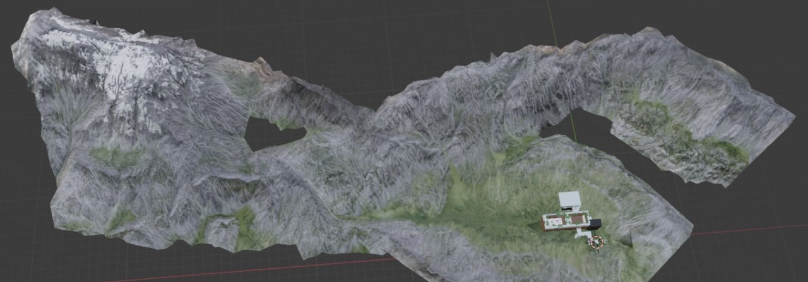

One of my favourite study projects was a semester-long collaboration with World of VR, a company from Cologne. The work ranged from marketing strategy to a final prototype showcasing their product Possibl — the screenshots here are from that build.


The project spanned multiple courses, so the tasks were varied — from analysing the ethical implications and market situation to potential marketing tools. The final submission included the video below; the prototype itself is sadly no longer online.